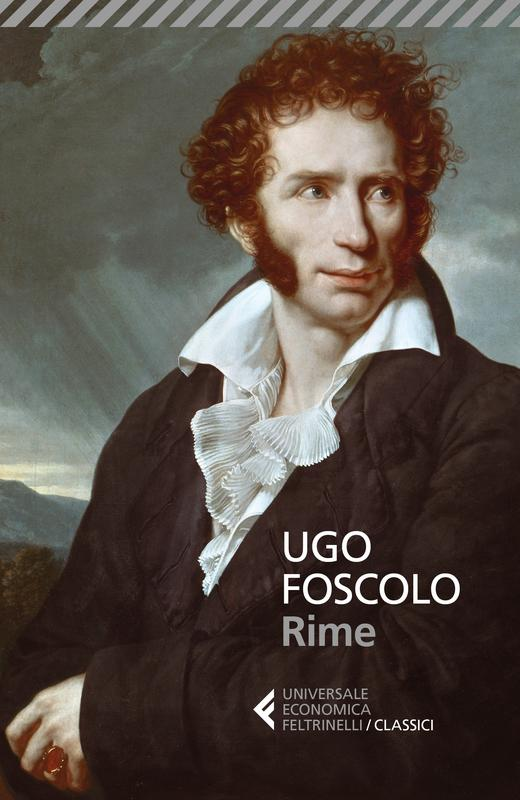
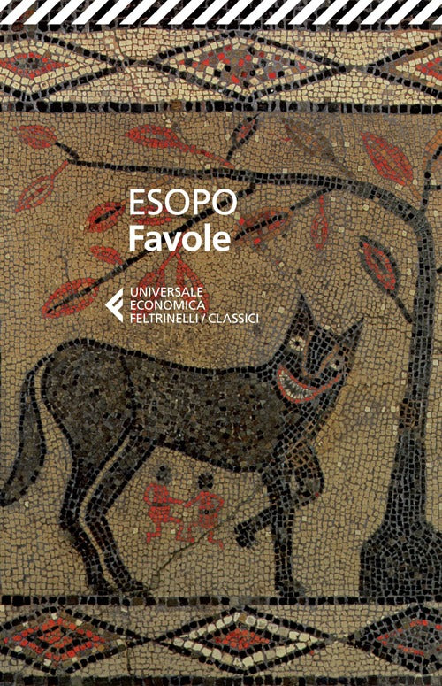

25:51 · 10 OPERE
Machiavelli e il machiavellismo
Il filo del discorso
Una moneta sovietica del 1924, commentata attraverso il gesto di una figura che indica l’avvenire, introduce una lettura fortemente polemica di Machiavelli. Dr Divago considera le idee come elementi capaci di agire nella vita degli individui e contrappone una cultura che alimenta la vita a una cultura che legittima il dominio. Il ricordo di Salamanca e il richiamo alla profezia biblica accompagnano questa distinzione. Il Principe diventa poi il centro dell’argomentazione: il relatore ne discute la destinazione politica, la fortuna interpretativa e la lettura proposta da Foscolo nei Sepolcri. La sua critica riguarda soprattutto il primato dell’apparenza, la rappresentazione conflittuale dei rapporti umani e la preferenza accordata al timore rispetto all’amore. Le immagini del lupo e dell’agnello tratte dalla tradizione esopica e i richiami a Shakespeare rendono visibile la contrapposizione fra logica del potere e responsabilità verso l’altro. La conclusione propone, come termini di confronto, Niebuhr, Schweitzer e Huxley: una cultura capace di formulare alternative dovrebbe opporsi all’idea che le sole relazioni possibili siano quelle di sopraffazione. Il nesso fra Machiavelli, propaganda sovietica e modernità è la tesi interpretativa del relatore, non una genealogia storica qui dimostrata.
I libri nel discorso

Bibbia
Copertina: San Paolo, 2014 · Nuova Versione dai Testi Antichi · edizione di riferimento
La Bibbia e il termine ebraico nabi sono nominati nella riflessione sul ruolo del profeta; più tardi un passo sul volto è ricordato senza identificazione sicura.
Passaggio 6:04 ↗ · Fonti e libro ↗
Il Principe
Copertina: Feltrinelli · 2013 · a cura di Ugo Dotti
Immagine autentica dell’opera, controllata visivamente; l’edizione di riferimento non è attribuita al filmato.
Il Principe e Machiavelli sono al centro della discussione, con richiamo ai capitoli sul realismo e sul timore.
Passaggio 9:43 ↗ · Fonti e libro ↗
Dei sepolcri
Copertina della raccolta Rime: Feltrinelli · Rime · 2018 · a cura di Marco Cerruti
Copertina autentica di Rime, raccolta comprendente Dei sepolcri con le note dell’autore; il carme è una delle opere contenute, non il titolo del volume fotografato.
Foscolo e i Sepolcri sono nominati nella discussione della lettura di Machiavelli.
Passaggio 10:35 ↗ · Fonti e libro ↗Riccardo III
Copertina: BUR · a cura di Gabriele Baldini · testo inglese a fronte
Immagine autentica dell’opera, controllata visivamente; l’edizione di riferimento non è attribuita al filmato.
Il relatore pronuncia Riccardo III; il passo su Machiavelli richiamato è invece riscontrabile in Enrico VI parte III.
Passaggio 14:24 ↗ · Fonti e libro ↗
Favole
Copertina: Feltrinelli · Universale Economica I Classici · 2014 · cura di Concetto Marchesi
Copertina autentica di una raccolta di Favole della tradizione esopica. Il rinvio del video è al corpus e all’immagine del lupo e dell’agnello: non identifica questa traduzione né la versione di una singola favola.
Esopo e alcune sue favole sono nominati; il lupo e l’agnello sono adoperati come immagine del dominio, senza una versione testuale determinata.
Passaggio 15:35 ↗ · Fonti e libro ↗
Giulio Cesare
Copertina: Feltrinelli · Universale Economica I Classici · 2013
Copertina autentica dell’edizione di riferimento, non attribuita all’esemplare del video.
Giulio Cesare è nominato e il relatore parafrasa il passo di Antonio sul giudizio fuggito fra le bestie, III.2.
Passaggio 20:45 ↗ · Fonti e libro ↗
Uomo morale e società immorale
Copertina: Jaca Book · Figure del pensiero moderno
Reinhold Niebuhr e Moral Man and Immoral Society sono riconoscibili nella fonte, con traduzione del titolo.
Passaggio 23:32 ↗ · Fonti e libro ↗
The Decay and Restoration of Civilization
Copertina della raccolta: Prometheus · The Philosophy of Civilization · 1987 · raccolta in inglese
Copertina della raccolta Prometheus del 1987 che contiene The Decay and Restoration of Civilization e Civilization and Ethics. I due saggi, originariamente distinti, restano voci separate. L’edizione in inglese dell’immagine non è attribuita al video.
Schweitzer e il saggio sul declino e la ricostruzione della civiltà sono indicati come alternativa culturale.
Passaggio 23:50 ↗ · Fonti e libro ↗
Il tramonto dell’Occidente
Identificazione probabile
Copertina: Nino Aragno, 2019 · volume II, seconda parte · edizione di riferimento
Spengler e il suo opus maior sono evocati senza titolo; identificazione probabile con Il tramonto dell’Occidente.
Passaggio 24:00 ↗ · Fonti e libro ↗
Fini e mezzi
Copertina: Mondadori, 1947
Aldous Huxley e il titolo inglese sono nominati con ordine invertito, Means and Ends; normalizzato come Ends and Means, Fini e mezzi.
Passaggio 24:20 ↗ · Fonti e libro ↗